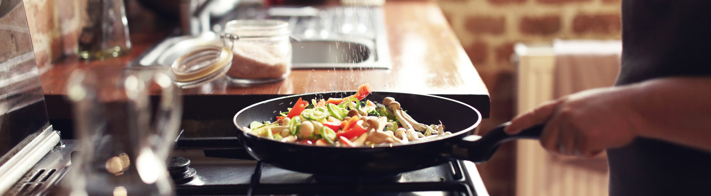
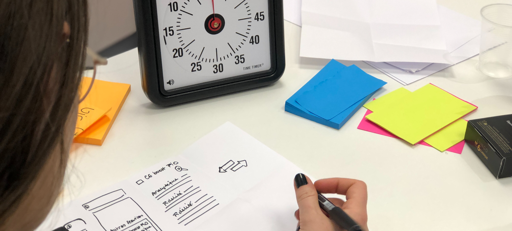
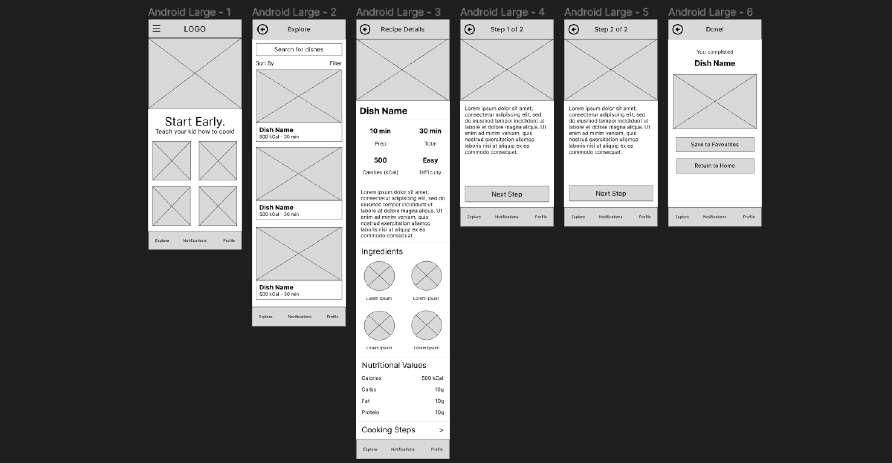
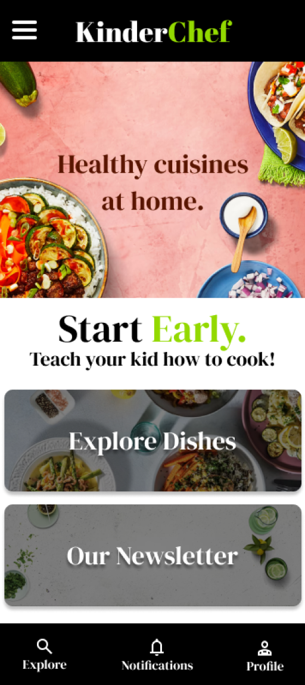
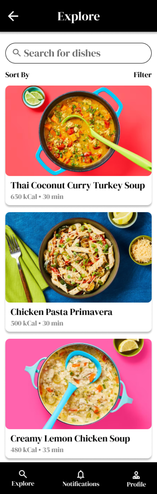
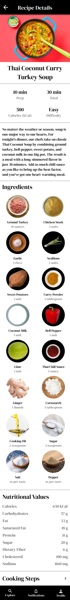
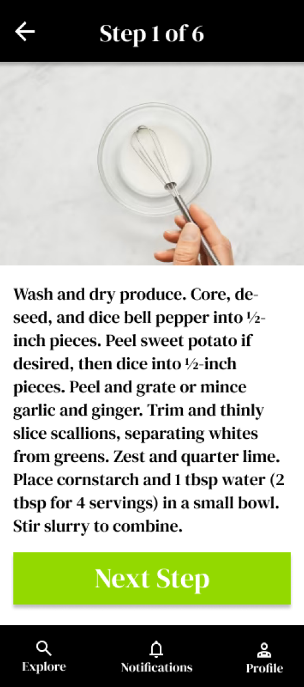
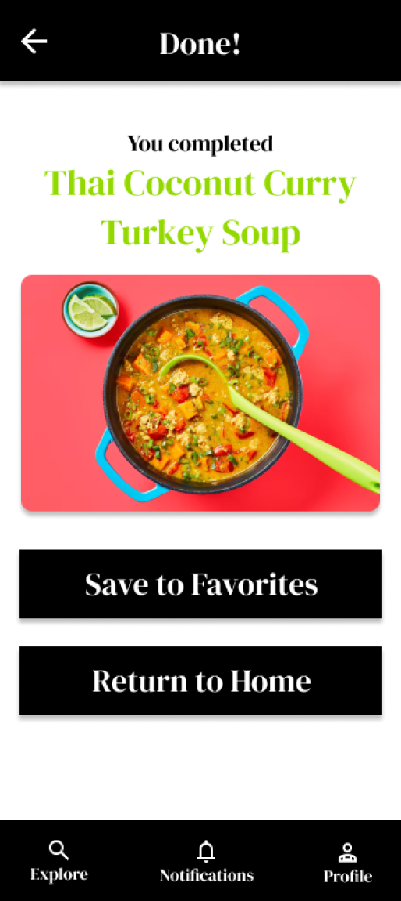

Work
About

A tool to help kids learn how to cook healthy food.

Role
UX designer, designing an app for KinderChef from the beginning to the
end.
Goal
Design a simple tool to help kids learn how to cook healthy food by
themselves.
Audience
Parents and kids, who wish learn to cook through recipes and
instructions.
Challenges
Conducting interviews, paper and digital wireframing, low and
high-fidelity prototyping, conducting usability studies, accounting for
accessibility, and iterating on designs.
Research
The user group consisted of potential customers that established the need for the app
via the problem of having to do extensive research to find healthy and easy recipes for kids to cook and eat.
Initial Concepts
Being a snack ordering app, my initial stages consisted of making sure
of incorporating pictures into the app to entice the user.
User Testing
I conducted two rounds of usability studies. Findings from the first
study helped guide the designs from wireframes to mockups. The second
study used a high-fidelity prototype and revealed what aspects of the
mockups needed refining.
Final Stages
Early designs were unclear about the layout so I added clear call to
action buttons to make the platform more intuitive and easy to interact
with.
Initial wireframes of CineBar


© 2023. All Rights Reserved to Shivraj Ghorpade.





Final Mockups of KinderChef
All
KickBox
KinderChef
Initial Wireframes of KinderChef
Conclusion
Our target users shared that the design was easy to navigate and very
engaging with the images and clearly showed a visual hierarchy.
Learnings
While designing the KinderChef tool, I learned various UI design
concepts and how to effectively cater to the user’s needs and how to
build on it with additional feedback as well.
About